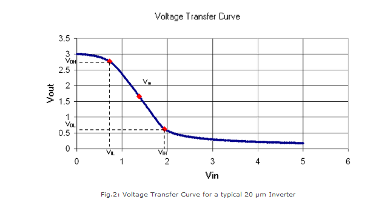
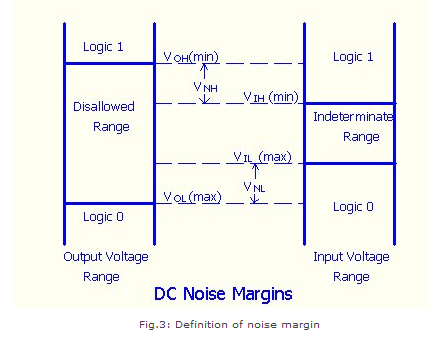

Shakshat Virtual Lab 
INDIAN INSTITUTE OF TECHNOLOGY GUWAHATI
The aim of this experiment is to design and plot the static (VTC) and dynamic characteristics of a digital CMOS inverter.
Introduction
The inverter is universally accepted as the most basic logic gate doing a Boolean operation on a single input variable. Fig.1 depicts the symbol, truth table and a general structure of a CMOS inverter. As shown, the simple structure consists of a combination of an pMOS transistor at the top and a nMOS transistor at the bottom.

CMOS is also sometimes referred to as complementary-symmetry metal–oxide–semiconductor. The words "complementary-symmetry" refer to the fact that the typical digital design style with CMOS uses complementary and symmetrical pairs of p-type and n-type metal oxide semiconductor field effect transistors (MOSFETs) for logic functions. Two important characteristics of CMOS devices are high noise immunity and low static power consumption. Significant power is only drawn while the transistors in the CMOS device are switching between on and off states. Consequently, CMOS devices do not produce as much waste heat as other forms of logic, for example transistor-transistor logic (TTL) or NMOS logic, which uses all n-channel devices without p-channel devices.
Inverter Static Characteristics (VTC)
Digital inverter quality is often measured using the Voltage Transfer Curve (VTC), which is a plot of input vs. output voltage. From such a graph, device parameters including noise tolerance, gain, and operating logic-levels can be obtained.

Ideally, the voltage transfer curve (VTC) appears as an inverted step-function - this would indicate precise switching between on and off - but in real devices, a gradual transition region exists. The VTC indicates that for low input voltage, the circuit outputs high voltage; for high input, the output tapers off towards 0 volts. The slope of this transition region is a measure of quality - steep (close to -Infinity) slopes yield precise switching. The tolerance to noise can be measured by comparing the minimum input to the maximum output for each region of operation (on / off). This is more explicitly shown in the fig.3.

Noise margin : is a parameter intimately related to the transfer characteristics. It allows one to estimate the allowable noise voltage on the input of a gate so that the output will not be affected. Noise margin (also called noise immunity) is specified in terms of two parameters - the low noise margin NL, and the high noise margin NH . Referring to above figure, NL is defined as the difference in magnitude between the maximum LOW input voltage recognized by the driven gate and the maximum LOW output voltage of the driving gate. That is, NL =|VIL - VOL|. Similarly, the value of NH is the difference in magnitude between the minimum HIGH output voltage of the driving gate and the minimum HIGH input voltage recognizable by the driven gate. That is, NMH =|VOH - VIH|. Where VIH|: minimum HIGH input voltage, VIL: maximum LOW input voltage, VOH: minimum HIGH output voltage, VOL: maximum LOW output voltage.
Inverter Dynamic Characteristics
Fig.4 shows the dynamic characteristics of a CMOS inverter. The following are some formal definitions of temporal parameters of digital circuits. All percentages are of the steady state values.

Rise Time (tr) : Time taken to rise from 10% to 90%.
Fall Time (tf): Time taken to fall from 90% to 10%
Edge Rate (trf): (tr + tf )/2.
High-to-Low propagation delay (tpHL): Time taken to fall from VOH to 50%.
Low-to-High propagation delay (tpLH): Time taken to rise from 50% to VOL.
Propagation Delay (tp): (tpHL + tpLH)/2.
Contamination Delay (tcd): Minimum time from the input crossing 50% to the output crossing 50%